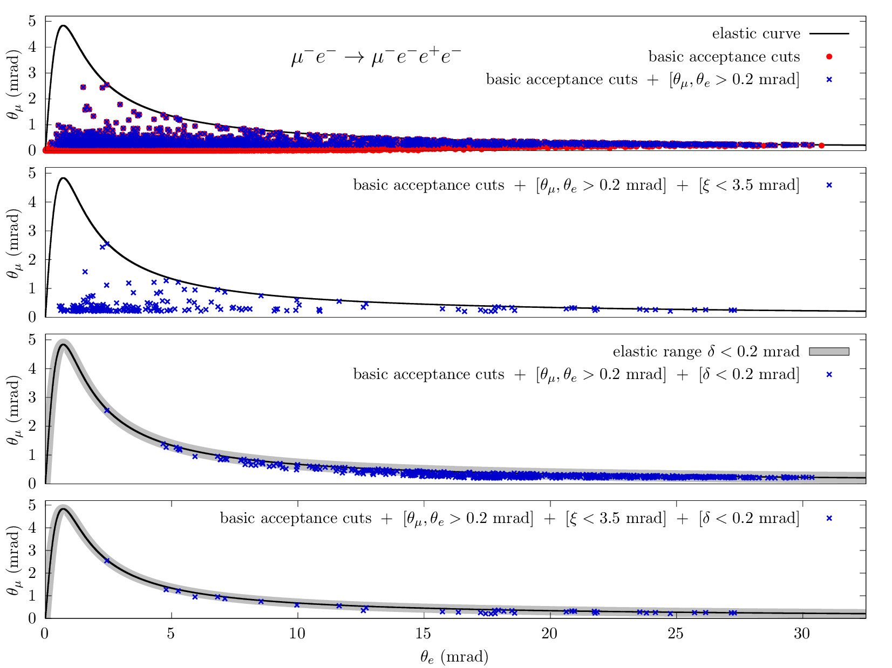
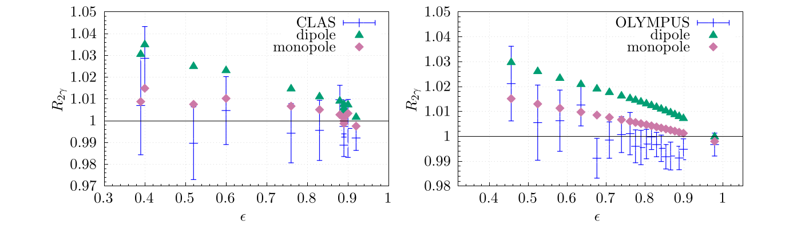

2026
মলম
Balm
তারা বলে আমাকে "রাজনৈতিক" হতে, বেরাদারি করতে। আমি মাথা কাত করে হ্যা বলে তাকায় তাকায় দেখি।
They tell me to be “political”—to play the brotherhood game: praise bought with praise, favor traded for favor. I tilt my head, say yes, and watch, and watch.
তারা আরো বলে বিজ্ঞান পেপার করতে। একটু কোল্যাব কোল্যাব মিষ্টি, আর গ্রান্ট গ্রান্ট গন্ধ। আমি মাথা কাত করে হ্যা বলে তাকায় তাকায় দেখি।
They tell me to do science papers—a little “collab-collab” sugar, a whiff of “grant-grant” perfume. I tilt my head, say yes, and watch, and watch.
তারা সুর বানাতে বলে চার মিনিটের কম আর তিন মিনিটের বেশি, যেখানে একটা ফোর বাই ফোর গান বসে যাবে অনায়াসে। আমি মাথা কাত করে হ্যা বলে তাকায় তাকায় দেখি।
They tell me to build a tune under four minutes and over three, where a song in four-four drops in without a fight. I tilt my head, say yes, and watch, and watch.
তারপর কাউরে কিছু না বলে ঘুমাই ছয় মাস কি এক বছর। ততোদিনে অনেক মলম বেচা হয়ে গেছে দুনিয়ায়।
Then, without a word to anyone, I sleep—six months, perhaps a year. By then, plenty of balm has been sold in the world.
তারা বলে মলমেই সব। মেশক আম্বরের শিশিটাও তো মলমেরই শিশি। যেনো মলমীর মধ্যে লুকায় থাকে মরমী। শিশিটা হাতে নিয়ে মৃগের পিছনে ছুটে ছুটে যাও হে শুদ্ধাচারী।
They say balm is everything. After all, the vial of musk and ambergris is just another vial of balm. As though a mystic lay hidden inside the balmist.. ha ha!... So take your vial, O man of purity, and run—run after the deer.
আমি আবার মাথা কাত করে তাকায় তাকায় দেখি।
Again, I tilt my head and watch, and watch.
Physics · Music · Philosophy
Syed Mehedi Hasan
I'm a theoretical particle physicist — I work out the precision frontier of quantum field theory. Away from the calculations, I compose music and write about the questions that sit underneath the physics.
- PositionPostdoctoral Research Associate
- InstituteInstitut für Theoretische Physik, Universität Regensburg
- FieldsPrecision QCD · Mellin–Barnes · Feynman integrals
Physics
Precision calculations for colliders.
My work runs along three fronts — the analytic theory of multi-loop and phase-space integrals, the mathematics that makes them tractable, and the collider phenomenology they feed.
Theory
RAD · Mellin–Barnes
Phase-space integrals
The Radial Angular Decomposition — real-emission phase-space integrals evaluated through multifold Mellin–Barnes representations and expressed in Goncharov polylogarithms.
Massive form factors
Two-loop vacuum polarization
Second-order corrections to the massive form factors from two-loop vertex diagrams with a vacuum-polarization insertion — closing a problem open for about two decades.
EIC
SIDIS
NNLO phase-space integrals for semi-inclusive deep-inelastic scattering — precision theory for the coming Electron–Ion Collider.
Mathematics
Mellin–Barnes
Four-denominator angular integrals
Angular phase-space integrals with four denominators through Mellin–Barnes — six- and seven-fold MB integrals solved analytically, to my knowledge a first in the literature.
Drell–Yan · LHC
Master integrals for Drell–Yan
All master integrals for the mixed QCD–EW corrections to Drell–Yan, with exact final-state lepton-mass dependence — the last missing piece for the neutral-current channel.
Phenomenology
Elastic ep · MUSE
Elastic ep scattering
NLO QED radiative corrections to elastic electron– and muon–proton scattering, with focus on the two-photon-exchange contribution.
MUonE · CERN
Muon–electron scattering
NNLO photonic and leptonic corrections, and the two-loop master integrals, for the MUonE experiment at CERN.
Selected results


Selected papers
2025
Angular phase-space integrals with four denominators through Mellin–Barnes
2025
Phase-space integrals through the Mellin–Barnes representation
2025
NNLO phase-space integrals for semi-inclusive deep-inelastic scattering
2024
Two-loop vertices with vacuum polarization insertion
2021
NNLO virtual and real leptonic corrections to muon–electron scattering
2020
Towards muon–electron scattering at NNLO
2020
Master integrals for the mixed QCD–QED corrections to Drell–Yan production of a massive lepton pair
Curriculum Vitæ
A glimpse of the record.
Training, funding, and the computational toolkit at a glance — download the full CV (PDF) ↗, or see all publications on InspireHEP.
Education
Ph.D. in Theoretical Particle Physics
University at Buffalo, USA · 2019 High distinction
Advised by Prof. Doreen Wackeroth. Thesis: mixed QCD–electroweak corrections at O(ααs) to Drell–Yan production at hadron colliders.
M.Sc. in Physics
Jawaharlal Nehru University, India · 2012
B.Sc. in Electrical and Electronic Engineering
University of Dhaka, Bangladesh · 2010
Appointments
- 2023–Postdoctoral Research Associate, University of Regensburg
- 2019–23Postdoctoral Fellow, INFN Pavia
- 2016–19Research Assistant, University at Buffalo
Grants & Awards
- 2026MIT Global Seed Funds grant — non-smooth large-N QFT via Mellin–Barnes, with Prof. Hong Liu (MIT)
- 2026Academic Research Sabbatical (ARSP I), Regensburg — competitive, ≤ 5 awarded per round
- 2019INFN Postdoctoral Fellowship
- 2017Outstanding Teaching Assistant in Physics, University at Buffalo
Computational toolkit
C++FORTRANPythonMathematicaFORMMBtoolsLiteRedFIREKIRAReduzeFeynArtsFeynCalcQGRAFTracer
Plus in-house Mathematica / FORTRAN codes for multi-loop master integrals, generalized-harmonic → Goncharov → classical polylogarithm conversion, and a GiNaC–FORTRAN bridge.